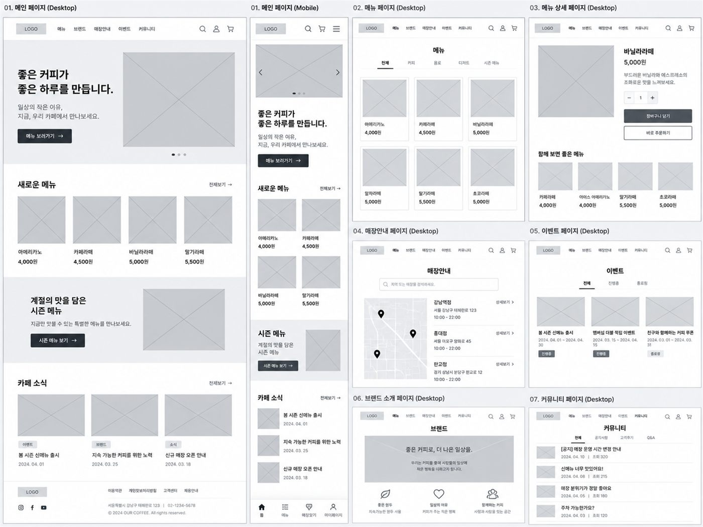
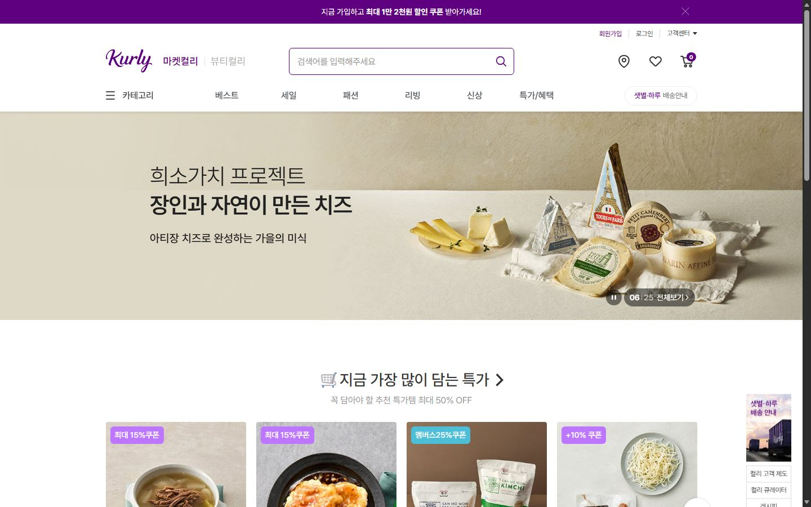
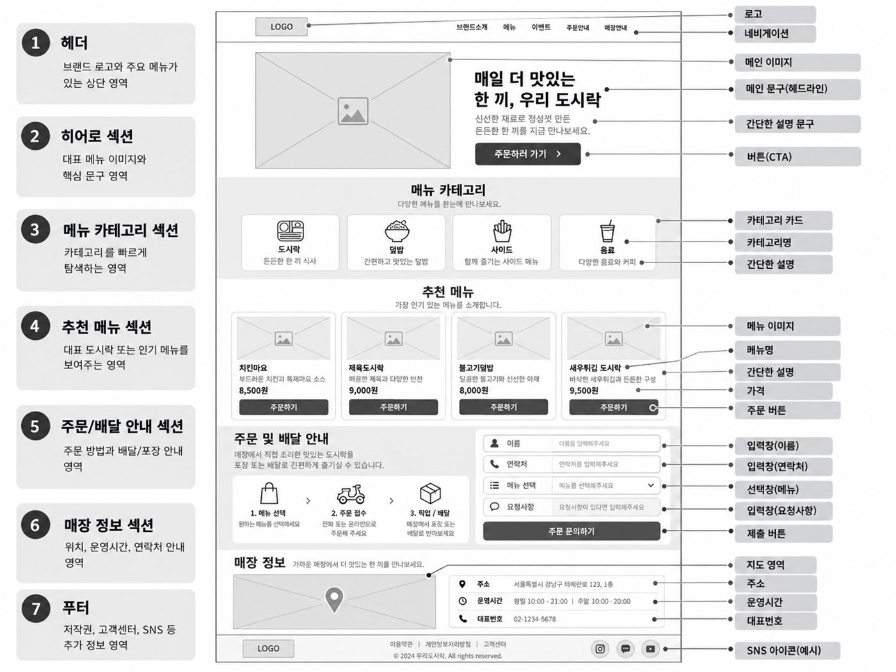
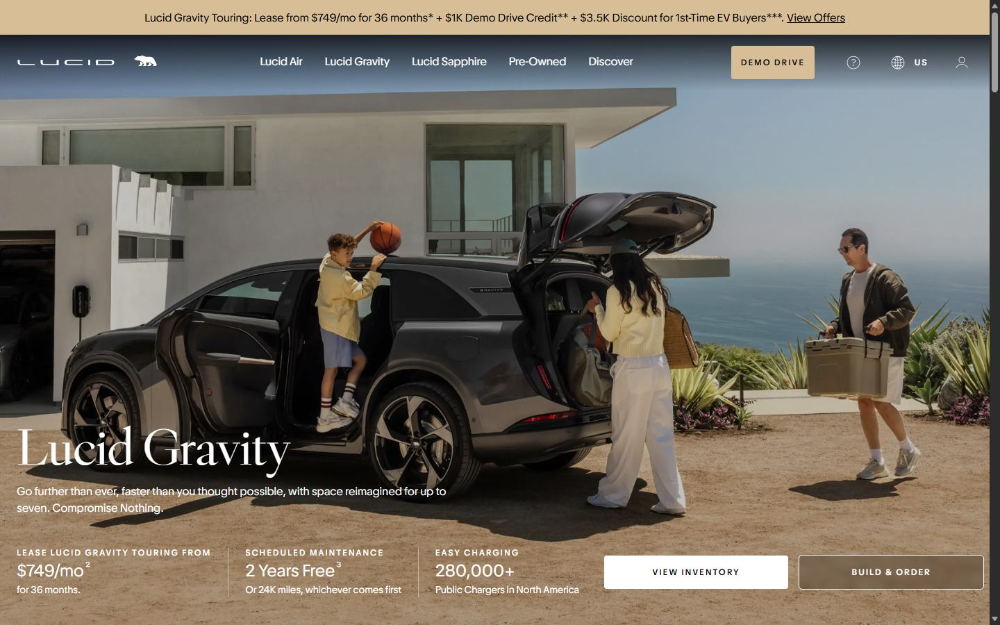
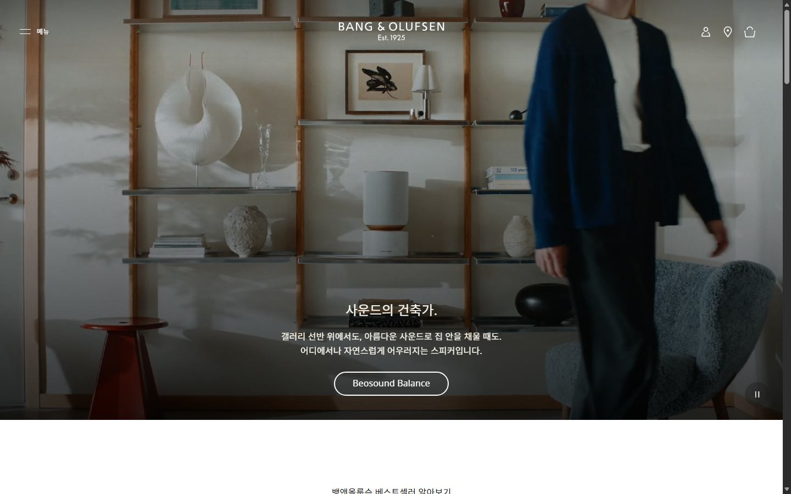

DAY 06바이브코딩 · 주문 · 최종 프로젝트
회원이 음료 주문하기 · 최종 프로젝트 시작
앞에서는 MELLOW BEAN에 장바구니와 주문을 붙이고, 로그인한 회원의 주문이 Supabase에 정확히 들어왔는지 확인합니다. 뒤에서는 하네스와 엔진을 이해하고, 짧은 CLAUDE.md 하나로 각자의 최종 프로젝트를 시작합니다.
1.수업 구성
DAY 05 로그인을 만든 초급자
MELLOW BEAN 주문 기능 → 최종 프로젝트 주제 · CLAUDE.md · 첫 화면
전체 수업의 약 70%
회원의 주문이 Supabase orders 표에 들어가는 것을 확인하고, 내 프로젝트의 CLAUDE.md와 첫 화면까지 만들기
2.오늘 할 일 · 결제는 왜 안 하나
오늘 만드는 주문 흐름
결제는 하지 않습니다
실제 결제에는 결제 대행사(PG) 계약, 사업자 정보, 결제가 정말 됐는지 확인하는 서버가 필요합니다. 오늘의 목표는 "주문 정보가 서버에 정확히 도착했는가"까지입니다.
관심이 있다면 토스페이먼츠 같은 결제 서비스의 테스트 키로 결제 화면을 연습해 볼 수는 있습니다(혼자 해 보기). 사업자 없이 실제 결제는 받을 수 없습니다.
준비물 — DAY 05 프로젝트(로그인이 되는 상태). 없다면 DAY 05의 이메일 로그인 프롬프트부터 진행하세요.
3.주문 데이터는 어떻게 생겼나
카페 계산대의 종이 주문서를 떠올려 보세요. 누가 · 무엇을 몇 개 · 합계 · 요청사항 · 언제 · 지금 상태가 적혀 있습니다. 이것을 표의 칸(Column)으로 옮깁니다.
| Column | 예 | 뜻 |
|---|---|---|
| id | 12 | 주문 번호 (자동) |
| user_id | 회원 번호 | 누가 — 로그인한 회원 (DAY 05의 User UID) |
| items | [{"name":"Cream Latte","price":6500,"qty":2}] | 무엇을 몇 개 — 목록을 한 칸에 |
| total_price | 13000 | 합계 |
| request | 얼음 적게 | 요청사항 (비어도 됨) |
| status | 접수 | 상태 — 접수 → 준비 중 → 완료 |
| created_at | 2026-11-20 14:03 | 주문 시각 (자동) |
누가 무엇을 할 수 있나 — DAY 05에서 말한 권한을 오늘 만듭니다
| 누가 | 내 주문 넣기 | 내 주문 보기 | 남의 주문 보기 | 고치기 · 지우기 |
|---|---|---|---|---|
| 로그인한 회원 | O | O | X | X |
| 로그인 안 한 방문자 | X | X | X | X |
4.STEP 01. orders 표 · 접근 규칙 만들기
- AI의 설명을 읽고, 위 권한 표와 같은지 확인합니다.
- SQL을 복사해 Supabase → SQL Editor → New query에 붙여 넣고 Run을 누릅니다.
- Table Editor에서 빈
orders표가 생겼는지 봅니다.
판단 문제 — 왜 user_id에 웹사이트가 아무 값이나 넣지 못하게 막을까? 생각 정리 보기
막지 않으면 누군가 다른 회원의 번호를 넣어 남의 이름으로 주문할 수 있습니다. 규칙은 "로그인한 사람의 진짜 회원 번호와 같을 때만 넣을 수 있다"로 정해야 합니다. 이 확인은 화면(브라우저)이 아니라 서버(Supabase)가 합니다.
5.STEP 02. 장바구니 만들기


크게 보기판단 문제 — DAY 03에서 그림자를 안 쓰기로 했는데, 장바구니 창에는? 생각 정리 보기
다른 내용 위에 떠 있는 창은 아래 내용과 구분이 필요하므로, 이유 있는 그림자 하나는 괜찮습니다. 결정은 이유가 생기면 바꿀 수 있습니다. 바꿨다면 디자인노트.md에도 한 줄 적어 두세요 — "그림자는 떠 있는 창에만".
6.STEP 03. 주문하기 → 주문 완료 화면
"두 번 눌러도 한 번만"은 실제 주문 화면에서 자주 생기는 문제입니다. 손님이 느린 화면에서 버튼을 여러 번 누르면 같은 주문이 여러 개 들어갈 수 있습니다.
7.STEP 04. Supabase에서 확인하기 · 계정 두 개로 확인하기
- 메뉴 두세 개를 담아 주문합니다.
- Supabase → Table Editor →
orders를 엽니다. - 새 줄의 items · total_price가 내가 고른 내용과 같은지 봅니다.
- user_id를 Authentication → Users의 내 회원 번호와 비교합니다.
- 합계 하나는 직접 계산합니다 — 예: 6,500 × 2 + 7,000 = 20,000.
- 로그아웃하고, DAY 05에서 만든 다른 계정(이메일 ↔ 구글)으로 로그인해 한 번 더 주문합니다.
- orders 표에 user_id가 서로 다른 두 줄이 있으면 성공입니다.
알아 둘 것 — 합계는 누가 계산해야 할까?
지금은 브라우저가 합계를 계산해서 보냅니다. 실제 가게라면 서버가 메뉴 가격으로 다시 계산해야 합니다. 브라우저에서 보내는 값은 누군가 0원으로 바꿔 보낼 수도 있기 때문입니다. 오늘의 범위는 "데이터가 잘 도착했는가"까지입니다.
세이브 포인트 — Stage → Commit ("회원 주문 기능") → Push
8.최종 프로젝트 — 범위 정하기 · 주제 고르기
만드는 시간은 오늘 남은 시간과 DAY 07, DAY 08 앞부분입니다. 작게 시작해서 완성하는 것이 목표입니다. 한 페이지 또는 2~3페이지, 꼭 필요한 기능 1~3개면 충분합니다.
지금까지 배운 것으로 만들 수 있는 기능
메뉴 · 상품 · 수업 · 작품 목록을 Database에서
이메일 · 구글로 회원 구분
주문 · 신청 · 예약 · 문의를 Database에
주제 예시


크게 보기

크게 보기주제를 못 정하겠다면 ② 동네 가게로 정하세요. 오늘 앞에서 만든 주문 기능을 그대로 응용할 수 있습니다.
9.하네스와 엔진 — 같은 AI인데 왜 하는 일이 다를까?
ChatGPT 대화창은 글로 답을 주고, Claude Code는 내 컴퓨터의 파일을 만들고 고칩니다. 둘 다 AI인데 왜 다를까요? 층으로 나눠 보면 보입니다.
| 층 | Anthropic | OpenAI (비교용) |
|---|---|---|
| 회사 | Anthropic | OpenAI |
| 채팅 앱 | Claude | ChatGPT |
| 일하는 앱 (하네스) | Claude Code | Codex |
| 모델 (엔진 · 두뇌) | Claude Opus · Sonnet · Haiku | GPT 모델 |
모델 = 엔진
글을 이해하고 답을 만드는 두뇌입니다. 혼자서는 파일을 열지도, 명령을 실행하지도 못합니다.
하네스 = 엔진을 얹은 자동차
엔진이 실제로 일하게 만드는 작업 환경입니다. 원래 뜻은 말에 채우는 마구. Claude Code가 하네스 — 파일 읽기 · 쓰기, 명령 실행, 규칙 파일 읽기를 합니다.
Claude Code에서 꾸밀 수 있는 것
| 이름 | 하는 일 | 비유 | 이 과정에서 |
|---|---|---|---|
| CLAUDE.md | 대화를 시작할 때마다 자동으로 읽는 프로젝트 메모 | 사내 규칙집 | 오늘 실습 |
| 스킬 | 필요할 때만 꺼내 읽는 작업 설명서 (/이름으로 실행) | 업무 매뉴얼 | 소개 |
| 권한 · 훅 | 무엇을 묻고 할지 / 정해진 순간 자동 실행 | 결재 규정 · 자동 점검표 | 소개 |
| MCP | 다른 서비스와 연결하는 통로 | 업무용 전화선 | DAY 08 개념 |
게임을 만들고 싶다면
게임에도 같은 구조가 있습니다. 게임 엔진(Unity · Godot, 웹 게임은 Phaser)이 화면 그리기 · 충돌 · 중력 · 소리 · 키보드 입력을 대신 처리하고, 그 위에 내가 게임 규칙 · 캐릭터 · 스테이지를 얹습니다.
AI로 게임을 만들 때도 순서는 같습니다 — 엔진을 정하고 → 게임 규칙을 CLAUDE.md에 적고 → 한 장면씩. 이 과정에서는 클릭 · 피하기 같은 작은 웹 게임 하나 정도를 최종 프로젝트로 해도 됩니다. 3D · 온라인 대전은 범위 밖입니다.
10.STEP 05. 새 프로젝트 · CLAUDE.md — 짧게 시작하기
- GitHub에서 새 Repository를 만듭니다 (Public 권장 — DAY 08 공개에 필요).
- VS Code에서 Clone하고 그 폴더를 엽니다 (DAY 02 방법).
- Claude Code 입력창에
/init을 입력합니다. 빈 폴더라 CLAUDE.md 초안에 내용이 거의 없는 것이 정상입니다. - 아래 틀을 채워 입력합니다. 길게 쓰지 않습니다. 만들면서 고칩니다.
Claude Code에서 새 대화를 열고 "이 프로젝트에서 지켜야 할 규칙이 뭐야?"라고 물어봅니다. 내가 적은 내용을 말하면 성공입니다.
한 줄 습관 — 만들다가 방향이 바뀌면 그때그때 "CLAUDE.md의 꼭 필요한 기능을 ○○로 고쳐줘"라고 말하세요. 처음부터 완벽하게 쓰는 문서가 아니라 고쳐 가며 쓰는 메모입니다.
11.STEP 06. 첫 화면 만들기 — DAY 03과 같은 방식으로
DAY 03 프롬프트 02와 같은 구조입니다. 다른 점은 디자인 결정을 CLAUDE.md에서 읽는다는 것뿐입니다. "기본 형태로", "화려하지 않게" 같은 말 대신 무엇을 어디에 둘지를 적으세요.
첫 화면 배치, 이런 방법들이 있습니다



크게 보기

크게 보기수업용 참고 캡처입니다. 배치만 참고하고 사진 · 로고 · 문구는 가져다 쓰지 않습니다. 작성 틀 ②의 "첫 화면" 칸에 고른 배치를 적으세요.
사진 준비
내가 찍은 사진은 DAY 03처럼 "가로 1200px로 줄이고 영어 이름으로 images에 넣어줘". 인터넷 사진은 무료 사진 사이트(Unsplash · Pexels)에서 받고, 다른 가게의 사진 · 로고는 쓰지 않습니다.
12.STEP 07. 가장 중요한 Section 하나
오늘 작업 저장 — Stage → Commit ("첫 화면 · 핵심 Section") → Push
13.빨리 끝났다면 — MELLOW BEAN 내 주문 내역
14.DAY 06 정리 & 다음 수업
오늘의 결과물
오늘의 핵심 용어
다음 수업 예고 — DAY 07
꼭 필요한 기능 완성 · 직접 눌러 보며 확인 · 휴대폰 화면
CLAUDE.md의 기능을 하나씩 완성하고 오류를 고칩니다. 지난 시간 이후 생각이 바뀌었다면 시작할 때 CLAUDE.md부터 고칩니다.